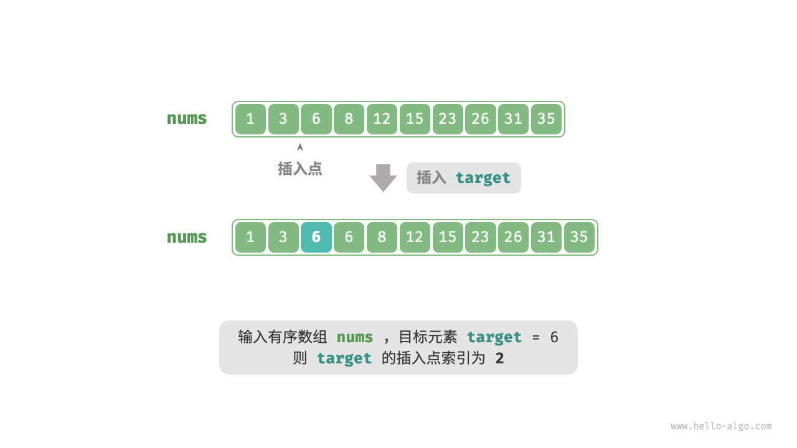
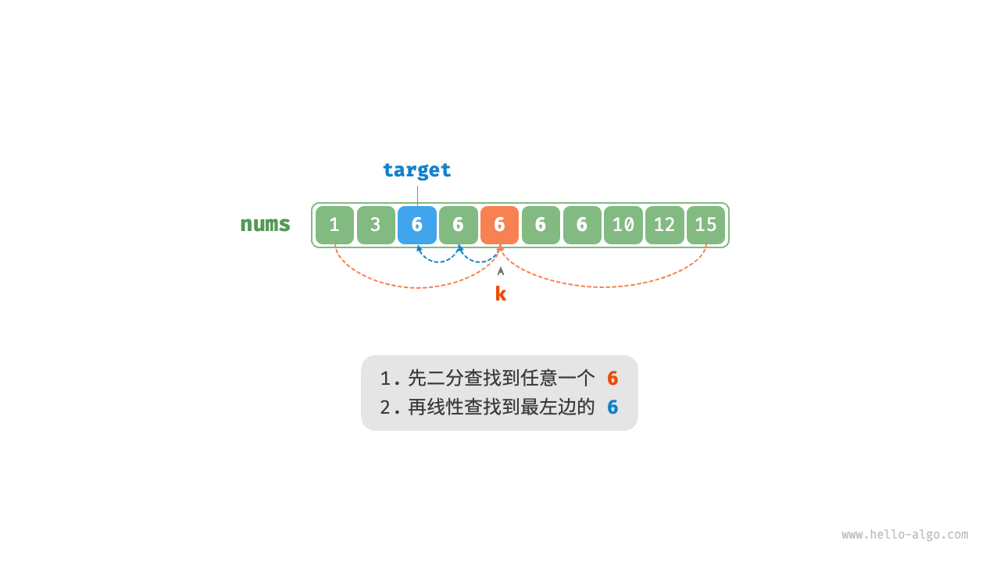
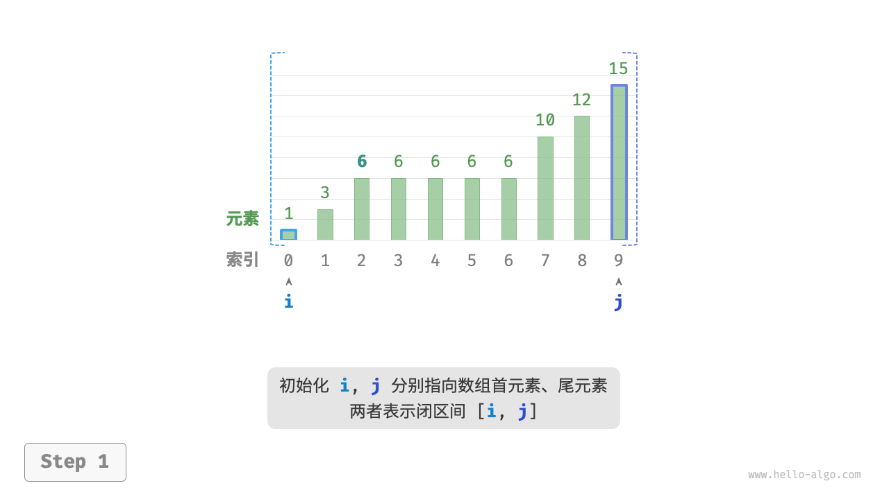
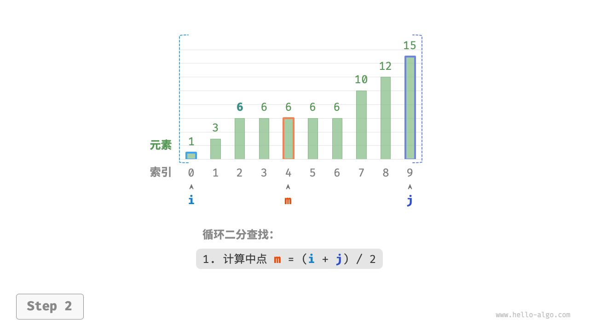
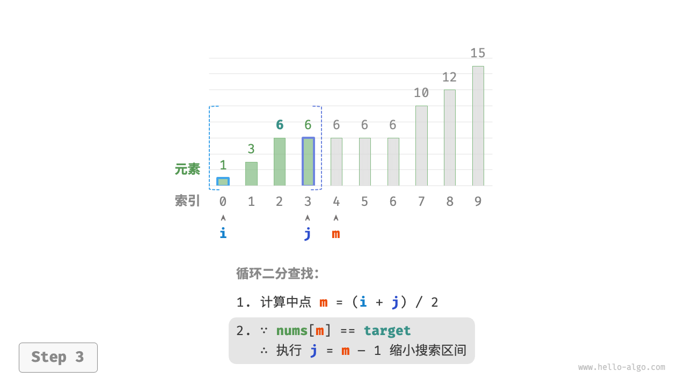
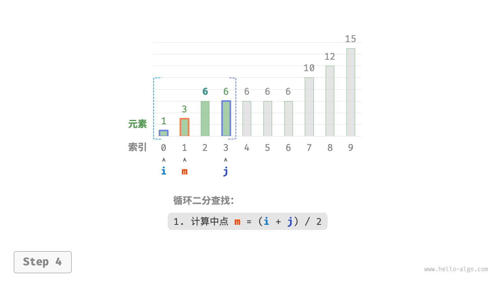
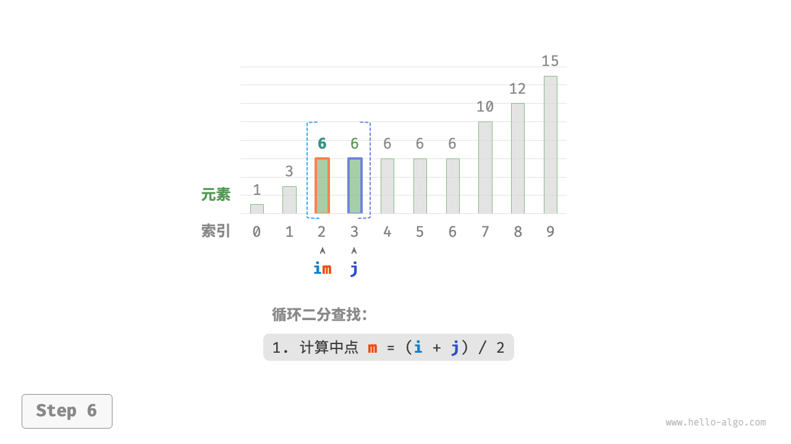
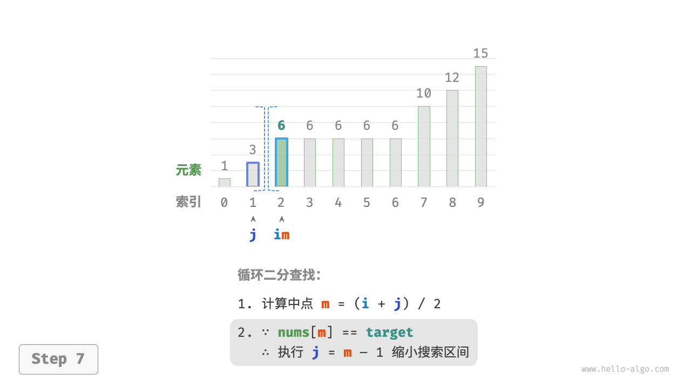
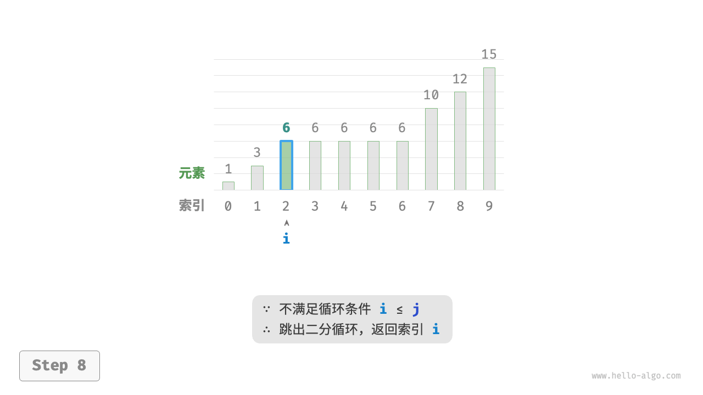

二分查找插入点
二分查找不仅可用于搜索目标元素，还可用于解决许多变种问题，比如搜索目标元素的插入位置。
无重复元素的情况
!!! question
给定一个长度为 $n$ 的有序数组 `nums` 和一个元素 `target` ，数组不存在重复元素。现将 `target` 插入数组 `nums` 中，并保持其有序性。若数组中已存在元素 `target` ，则插入到其左方。请返回插入后 `target` 在数组中的索引。示例如下图所示。

如果想复用上一节的二分查找代码，则需要回答以下两个问题。
问题一：当数组中包含 target 时，插入点的索引是否是该元素的索引？
题目要求将 target 插入到相等元素的左边，这意味着新插入的 target 替换了原来 target 的位置。也就是说，当数组包含 target 时，插入点的索引就是该 target 的索引。
问题二：当数组中不存在 target 时，插入点是哪个元素的索引？
进一步思考二分查找过程：当 nums[m] < target 时 $i$ 移动，这意味着指针 $i$ 在向大于等于 target 的元素靠近。同理，指针 $j$ 始终在向小于等于 target 的元素靠近。
因此二分结束时一定有：$i$ 指向首个大于 target 的元素，$j$ 指向首个小于 target 的元素。易得当数组不包含 target 时，插入索引为 $i$ 。代码如下所示：
"Python"
def binary_search_insertion_simple(nums: list[int], target: int) -> int: """二分查找插入点（无重复元素）""" i, j = 0, len(nums) - 1 // 初始化双闭区间 [0, n-1] while i <= j: m = (i + j) // 2 // 计算中点索引 m if nums[m] < target: i = m + 1 // target 在区间 [m+1, j] 中 elif nums[m] > target: j = m - 1 // target 在区间 [i, m-1] 中 else: return m // 找到 target ，返回插入点 m // 未找到 target ，返回插入点 i return i"C++"
/* 二分查找插入点（无重复元素） */ int binarySearchInsertionSimple(vector<int> &nums, int target) { int i = 0, j = nums.size() - 1; // 初始化双闭区间 [0, n-1] while (i <= j) { int m = i + (j - i) / 2; // 计算中点索引 m if (nums[m] < target) { i = m + 1; // target 在区间 [m+1, j] 中 } else if (nums[m] > target) { j = m - 1; // target 在区间 [i, m-1] 中 } else { return m; // 找到 target ，返回插入点 m } } // 未找到 target ，返回插入点 i return i; }"Java"
/* 二分查找插入点（无重复元素） */ int binarySearchInsertionSimple(int[] nums, int target) { int i = 0, j = nums.length - 1; // 初始化双闭区间 [0, n-1] while (i <= j) { int m = i + (j - i) / 2; // 计算中点索引 m if (nums[m] < target) { i = m + 1; // target 在区间 [m+1, j] 中 } else if (nums[m] > target) { j = m - 1; // target 在区间 [i, m-1] 中 } else { return m; // 找到 target ，返回插入点 m } } // 未找到 target ，返回插入点 i return i; }
存在重复元素的情况
!!! question
在上一题的基础上，规定数组可能包含重复元素，其余不变。
假设数组中存在多个 target ，则普通二分查找只能返回其中一个 target 的索引，而无法确定该元素的左边和右边还有多少 target。
题目要求将目标元素插入到最左边，所以我们需要查找数组中最左一个 target 的索引。初步考虑通过下图所示的步骤实现。
- 执行二分查找，得到任意一个
target的索引，记为 $k$ 。 - 从索引 $k$ 开始，向左进行线性遍历，当找到最左边的
target时返回。

此方法虽然可用，但其包含线性查找，因此时间复杂度为 $O(n)$ 。当数组中存在很多重复的 target 时，该方法效率很低。
现考虑拓展二分查找代码。如下图所示，整体流程保持不变，每轮先计算中点索引 $m$ ，再判断 target 和 nums[m] 的大小关系，分为以下几种情况。
- 当
nums[m] < target或nums[m] > target时，说明还没有找到target，因此采用普通二分查找的缩小区间操作，从而使指针 $i$ 和 $j$ 向target靠近。 - 当
nums[m] == target时，说明小于target的元素在区间 $[i, m - 1]$ 中，因此采用 $j = m - 1$ 来缩小区间，从而使指针 $j$ 向小于target的元素靠近。
循环完成后，$i$ 指向最左边的 target ，$j$ 指向首个小于 target 的元素，因此索引 $i$ 就是插入点。
"<1>" 
"<2>" 
"<3>" 
"<4>" 
"<5>"

"<6>" 
"<7>" 
"<8>" 
观察以下代码，判断分支 nums[m] > target 和 nums[m] == target 的操作相同，因此两者可以合并。
即便如此，我们仍然可以将判断条件保持展开，因为其逻辑更加清晰、可读性更好。
"Python"
def binary_search_insertion(nums: list[int], target: int) -> int: """二分查找插入点（存在重复元素）""" i, j = 0, len(nums) - 1 // 初始化双闭区间 [0, n-1] while i <= j: m = (i + j) // 2 // 计算中点索引 m if nums[m] < target: i = m + 1 // target 在区间 [m+1, j] 中 elif nums[m] > target: j = m - 1 // target 在区间 [i, m-1] 中 else: j = m - 1 // 首个小于 target 的元素在区间 [i, m-1] 中 // 返回插入点 i return i"C++"
/* 二分查找插入点（存在重复元素） */ int binarySearchInsertion(vector<int> &nums, int target) { int i = 0, j = nums.size() - 1; // 初始化双闭区间 [0, n-1] while (i <= j) { int m = i + (j - i) / 2; // 计算中点索引 m if (nums[m] < target) { i = m + 1; // target 在区间 [m+1, j] 中 } else if (nums[m] > target) { j = m - 1; // target 在区间 [i, m-1] 中 } else { j = m - 1; // 首个小于 target 的元素在区间 [i, m-1] 中 } } // 返回插入点 i return i; }"Java"
/* 二分查找插入点（存在重复元素） */ int binarySearchInsertion(int[] nums, int target) { int i = 0, j = nums.length - 1; // 初始化双闭区间 [0, n-1] while (i <= j) { int m = i + (j - i) / 2; // 计算中点索引 m if (nums[m] < target) { i = m + 1; // target 在区间 [m+1, j] 中 } else if (nums[m] > target) { j = m - 1; // target 在区间 [i, m-1] 中 } else { j = m - 1; // 首个小于 target 的元素在区间 [i, m-1] 中 } } // 返回插入点 i return i; }
!!! tip
本节的代码都是“双闭区间”写法。有兴趣的读者可以自行实现“左闭右开”写法。
总的来看，二分查找无非就是给指针 $i$ 和 $j$ 分别设定搜索目标，目标可能是一个具体的元素（例如 target ），也可能是一个元素范围（例如小于 target 的元素）。
在不断的循环二分中，指针 $i$ 和 $j$ 都逐渐逼近预先设定的目标。最终，它们或是成功找到答案，或是越过边界后停止。